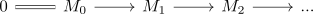
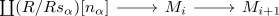

tower of an s-nilpotent module
Proposition
Let $R$ be an (\mathbb{E}_1)-ring spectrum and $S \subseteq \pi_*(R)$ be a homogeneous subset satisfying the left ore condition. Let $M$ be a S-nilpotent module spectrum, then there exists a sequence

of module spectra where
- for each $i \geq 0$ there exists a fiber sequence

- the colimit is equivalent to $M$ (in the category of module spectra)